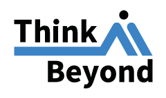
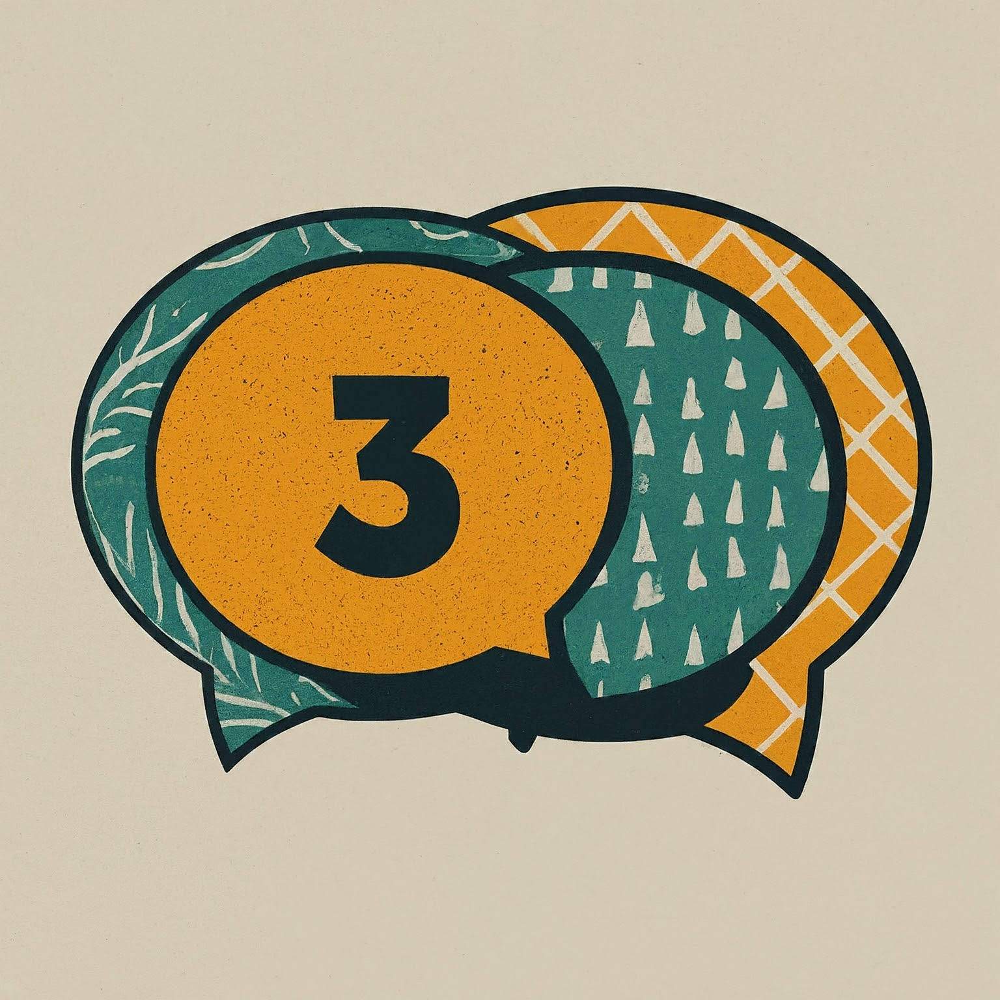
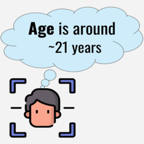
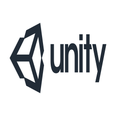

This project addresses the challenge of accurately counting speakers in meeting recordings where speech may overlap. This is essential for improving the accuracy of automated meeting transcriptions. To generate realistic training data, a simulator was developed that combines clean speech (LibriSpeech-clean-100) with noise and reverberation effects (Open-RIR dataset).
Two established speaker recognition models (x-vector and ECAPA-TDNN) were tested alongside a novel approach. This new method integrated a pretrained Wav2Vec 2.0 model with a linear classifier and XVector. The system analyzes short audio segments, providing timestamps and the detected number of speakers.
Crucially, the Wav2Vec 2.0 hybrid model significantly outperformed the other approaches. This demonstrates its power in handling complex meeting environments. This work pushes the boundaries of speaker counting technology and offers a valuable tool for the SpeechBrain project, ultimately benefiting a wide range of speech-related applications.

This project is a learning experience on how different neural networks and specific hyperparameters work on a dataset. Related to COMP 6721 Applied AI.
A mini version of the Patent. Reflective of the initial stride towards it :)
A project which was part of learning Exploratory data analysis and dashboarding using Flask and Python.

A small video developed using Unity which has basic level design, Cinemachine and particle system animation. It's not the best but you can watch it here :)

An attempt to extract features, classify and understand Pathology images.

A collection of educational Jupyter Notebook exercises focused on deep learning concepts using PyTorch. The labs progress from foundational deep learning topics through advanced concepts, including integration with HuggingFace transformers for state-of-the-art NLP and machine learning applications.
An educational collection of hands-on lab notebooks (ConversationalAI-Labs) focused on speech and audio processing using the SpeechBrain framework. The materials progress from fundamental concepts like audio classification and CNNs through advanced techniques including transformers, speaker identification, and pre-trained models for speech recognition and generative language models.